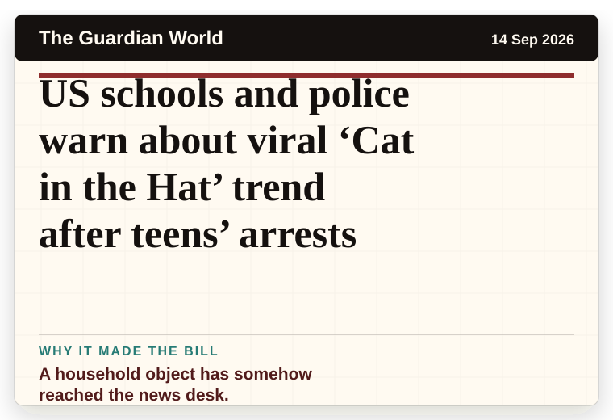
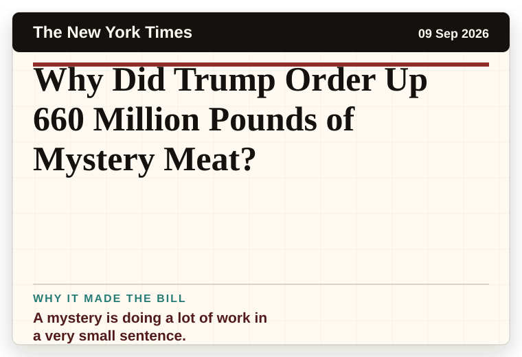
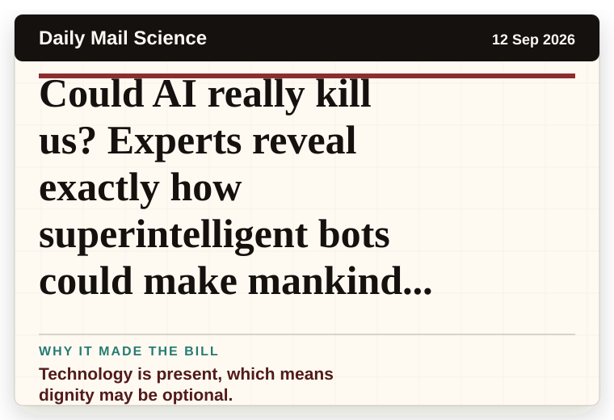
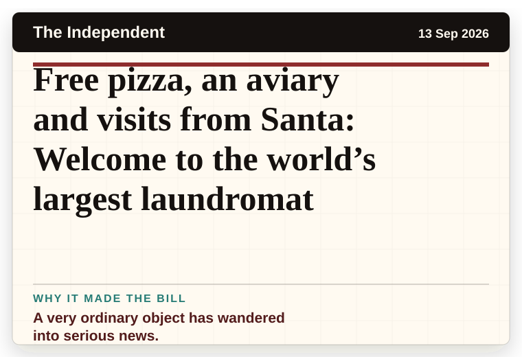
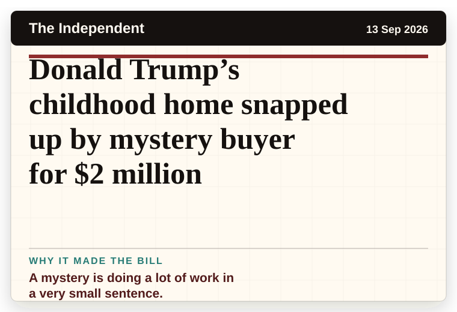
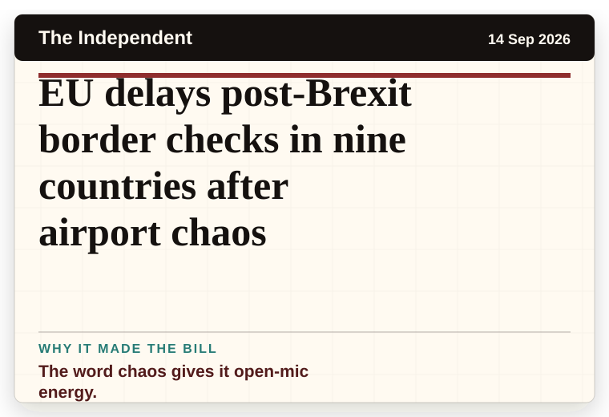

Mirror Weird News
United Kingdom
'I went to take bins out and got shock of my life after lifting wheelie bin lid'
A household object has somehow reached the news desk.
The latest daily picks, linked back to the original sources. Search the room, pick a source, or follow a headline out to the full story.
Record updated: 14 Sep 2026, 07:38 AM AEST
Showing 12 headline candidates from the refresh run completed on 14 Sep 2026, 07:38 AM AEST.
A household object has somehow reached the news desk.

The scale is doing deadpan comedy.

A household object has somehow reached the news desk.

The scale is doing deadpan comedy.

A mystery is doing a lot of work in a very small sentence.

It has the shape of a tiny adventure reported with a straight face.

It has the shape of a tiny adventure reported with a straight face.

A household object has somehow reached the news desk.

Technology is present, which means dignity may be optional.

A very ordinary object has wandered into serious news.

A mystery is doing a lot of work in a very small sentence.

The word chaos gives it open-mic energy.